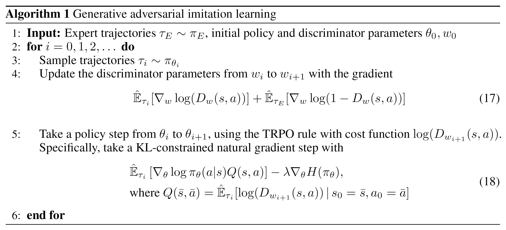

GAIL算法
摘要
简述 GAIL 算法的核心思想（结合生成对抗网络与模仿学习）、优势（样本效率高、泛化能力强）及应用场景（机器人控制、自动驾驶等），引出全文框架。
一、引言
1.1 模仿学习背景
- 传统模仿学习方法（行为克隆、逆强化学习）的局限性
- 数据分布偏移、样本效率低等问题
1.2 GAIL 算法的提出
- 解决传统方法痛点的动机
- GAIL 在学术界和工业界的影响力
二、GAIL 算法基础
2.1 核心思想
- 生成器(Generator)与判别器(Discriminator)的对抗博弈
- 从专家轨迹中学习最优策略的机制
2.2 数学原理
- 形式化定义：马尔可夫决策过程(MDP)
- 目标函数：最大化判别器无法区分生成轨迹与专家轨迹的概率
- 优化算法：策略梯度与价值函数近似
2.3 算法流程

- 初始化生成器策略和判别器网络
- 生成器与环境交互产生轨迹
- 判别器区分生成轨迹与专家轨迹
- 更新生成器策略以最大化判别器误判率
- 更新判别器以提高区分能力
- 迭代至收敛
三、GAIL 与相关算法的对比
3.1 与行为克隆(Behavior Cloning)对比
- 数据效率对比
- 对专家数据的依赖程度
- 泛化能力对比
3.2 与逆强化学习(IRL)对比
- 学习范式差异（显式奖励函数 vs 隐式奖励函数）
- 样本复杂度对比
- 对环境模型的依赖程度
3.3 与其他 GAN 变体对比
- 与标准 GAN 的区别
- 与对抗模仿学习(AIRL)等改进算法的联系与区别
四、GAIL 算法的改进与扩展
4.1 稳定性改进
- 奖励函数设计优化
- 判别器训练技巧（如梯度惩罚、谱归一化）
- 引入先验知识约束
4.2 样本效率提升
- 结合强化学习算法（如PPO、SAC）
- 探索策略优化
- 主动学习机制
4.3 处理复杂场景
- 多智能体环境下的 GAIL
- 部分可观测环境下的 GAIL
- 分层 GAIL 架构
五、应用案例分析
5.1 机器人控制
- 机器人运动规划（如行走、抓取）
- 工业机器人操作技能学习
- 对比传统控制方法的优势
5.2 自动驾驶
- 车辆决策与轨迹规划
- 处理复杂交通场景
- 实际应用中的挑战与解决方案
5.3 游戏与交互系统
- 游戏 AI 行为学习
- 虚拟角色动作生成
- 人机协作场景应用
5.4 其他领域
- 自然语言处理中的对话生成
- 金融交易策略学习
- 医疗决策支持系统
六、挑战与未来方向
6.1 当前面临的挑战
- 高维状态/动作空间下的性能下降
- 对专家数据质量和数量的敏感依赖性
- 训练稳定性问题
- 可解释性不足
6.2 研究热点与趋势
- 结合无监督学习与自监督学习
- 元学习与快速适应能力
- 安全约束下的 GAIL
- 少样本与零样本模仿学习
- 理论保证与收敛性分析
七、总结
7.1 核心贡献回顾
- 算法创新点总结
- 解决的关键问题
7.2 应用价值与意义
- 在人工智能领域的地位
- 对实际工程问题的推动作用
7.3 展望未来
- 潜在突破方向
- 商业化应用前景
参考文献
列出重要参考文献，包括：
- GAIL 原始论文：[Generative Adversarial Imitation Learning, NeurIPS 2016]
- 相关改进算法论文
- 主要应用案例论文
- 理论分析与对比研究论文
附录（可选）
- 算法伪代码
- 实验环境与参数设置
- 补充实验结果与分析
- 代码实现链接（如开源库）
本博客所有文章除特别声明外，均采用 CC BY-NC-SA 4.0 许可协议。转载请注明来自 Xucheng95's Blog！
相关推荐

评论